☁️ Self-Host the Cloudflare Rendezvous
WAN Live ships with a default rendezvous URL hosted by Happy Tunes. It works out of the box, but the free tier is shared with everyone - if you run lots of sessions, build CI bots that smoke- test connections, or just want a custom domain, deploy your own Cloudflare Worker. The script is ~120 lines, and the free tier covers 100 000 requests/day, which is enough for hundreds of sessions.
💰 Cost: $0/month for hobby use
Cloudflare Workers free tier: 100k requests/day, KV reads 100k/day, KV writes 1k/day. Each session uses ~4 requests + ~3 KV writes (offer, answer, polling). You can run hundreds of sessions per day without ever leaving the free tier. Source: Cloudflare pricing as of 2026-05.
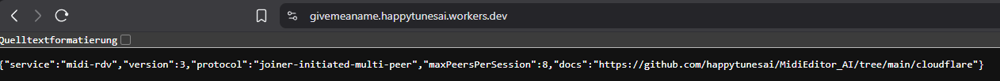
/health endpoint returns
a small JSON blob that confirms it's live.Why self-host?
- Privacy. Your rendezvous, your logs - the default operator can see who connects when (just metadata, no MIDI).
- Quota. The shared default is rate-limited per IP. Heavy users hit it.
- Custom domain. Use
rdv.your-band.cominstead ofworkers.dev. - Uptime control. If the default goes down, your sessions still work.
- It's tiny. The Worker is ~120 LoC, all in cloudflare/rendezvous.js.
How rendezvous works
The Worker is a tiny key-value store with an HTTP front. Each session uses three short-lived records (5-minute TTL): a session marker, the joiner's offer SDP, and the host's answer SDP. Once both sides have each other's SDP, the peers establish a direct DTLS-encrypted WebRTC connection - the Worker isn't in the path anymore.
The Worker only sees five small HTTPS calls per joiner (steps 1-5, ~5 KB total). After the SDPs have been exchanged, ICE finds a path between the peers and DTLS handshakes them directly - your MIDI edits never traverse Cloudflare. Each step in the list above highlights as its dot animates; the green dots in step 6 represent direct peer-to-peer traffic on the new bottom track.
Five-minute deploy walkthrough
- Sign up at dash.cloudflare.com. Free tier
is fine. You don't need a domain to start - you'll get
your-worker.workers.dev. - Create the KV namespace. In the Cloudflare dashboard:
Workers & Pages → KV → Create namespace. Name it
RDV. The Worker code references the binding by this exact name - spelling matters.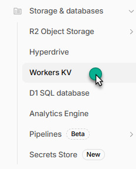
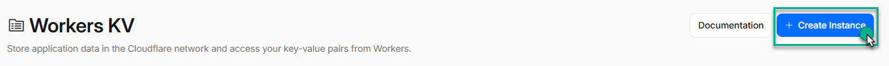
Create the KV namespace namedRDV. - Create the Worker. Workers & Pages → Create
application → Create Worker. Pick any name - e.g.
midi-rendezvous. Click Deploy on the default "Hello World" template; we'll replace the code in the next step.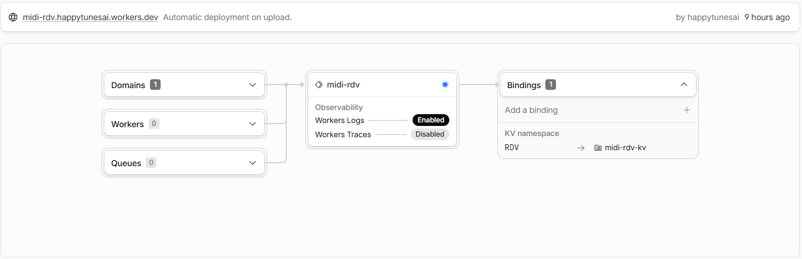
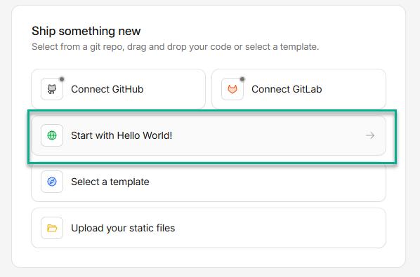
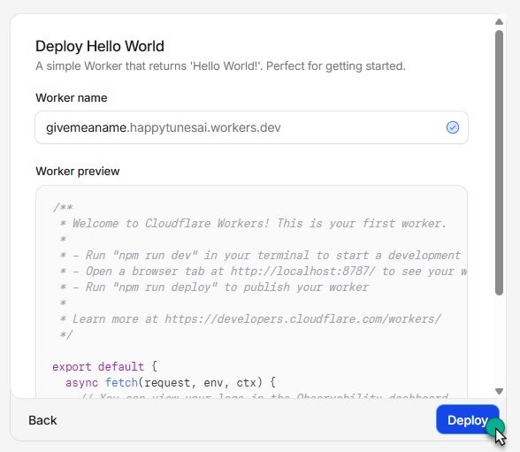
Deploy the default template first - we just need a Worker shell to paste into. - Paste the rendezvous code. On the Worker page, click
Edit code. Open
cloudflare/rendezvous.js
in the GitHub repo, copy the full contents (header comment included),
paste into the Cloudflare editor replacing the Hello-World body, then
click Save and Deploy.
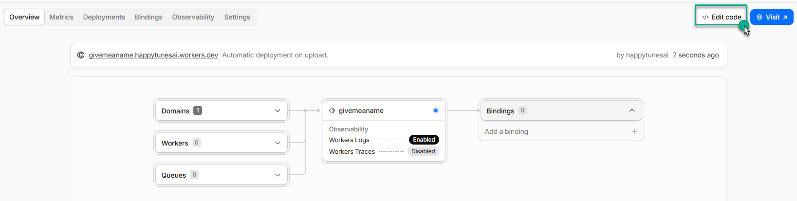
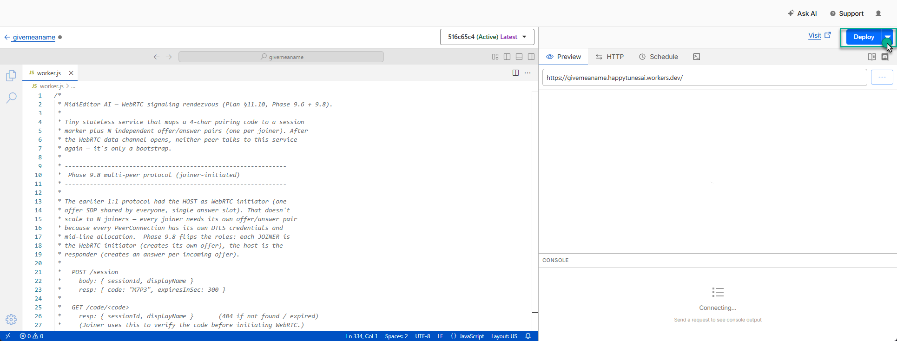
Save & Deploy after pastingrendezvous.js. - Bind the KV namespace to the Worker. Worker page →
Settings → Variables and Secrets → scroll to
KV Namespace Bindings. Click Add binding:
- Variable name:
RDV(must match exactly - the Worker code readsenv.RDV.put(…)) - KV namespace: pick the
RDVnamespace you created in step 2
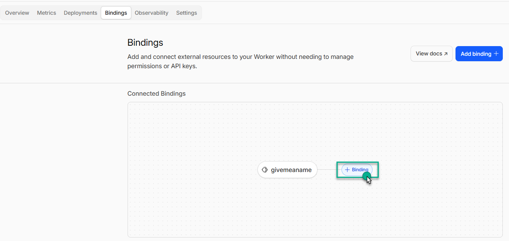
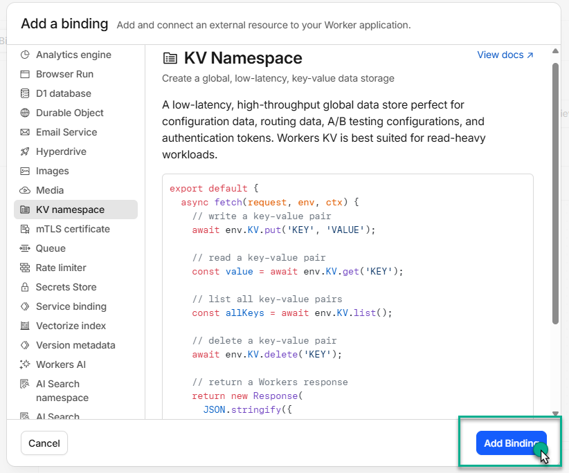
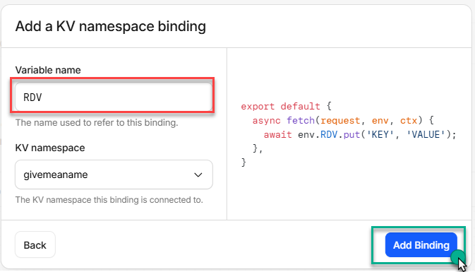
Variable nameRDVbound to the namespace also calledRDV. - Variable name:
- Test with
/health. Openhttps://your-worker.workers.dev/healthin a browser. You should get JSON like:
If you see this, the Worker is live. If you get a 404 or 5xx, double check that the deploy ran and the KV binding name is exactly{ "service": "midi-rdv", "version": 3, "protocol": "joiner-initiated-multi-peer", "maxPeersPerSession": 8, "docs": "https://github.com/happytunesai/MidiEditor_AI/tree/main/cloudflare" }RDV.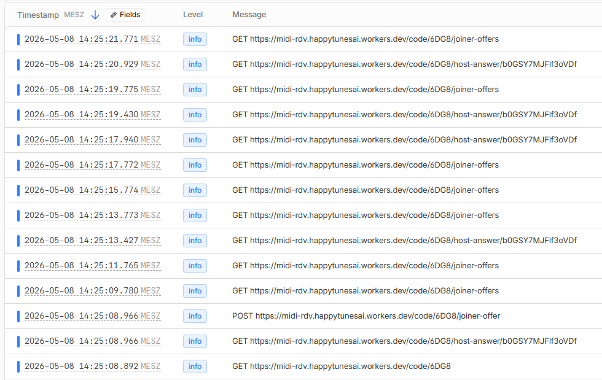
Worker live tail (optional) lets you watch requests fly through during a session. - Point MidiEditor at it. Open Edit → Settings →
Collaboration → Rendezvous URL. Paste your worker URL
(without
/health- just the base, e.g.https://midi-rendezvous.your-name.workers.dev). Click Test connection. You should see a green "Connection looks great".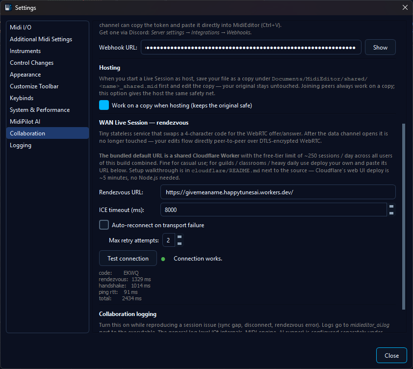
Paste your Worker URL into the Rendezvous URL field; close the dialog to save. - You're done. Start a WAN session as usual - your code, SDPs, and answer-poll all flow through your own Worker now.
Endpoint reference
For the curious, here's exactly what the Worker exposes. Every record TTL is 5 minutes.
| Method | Path | Body | Returns | Purpose |
|---|---|---|---|---|
GET | /health | - | JSON: service info | Pre-flight, monitoring |
POST | /session | {sessionId, displayName} | {code, expiresInSec} |
Host announces a new session, gets a 4-char code |
GET | /code/<c> | - | {sessionId, displayName} |
Joiner verifies the code is valid before initiating |
POST | /code/<c>/joiner-offer | {joinerId, sdp} | {ok: true} |
Joiner publishes their WebRTC offer (one per joiner) |
GET | /code/<c>/joiner-offers | - | {offers:[{joinerId,sdp,ts},…]} |
Host polls for pending offers; returns all not-yet-paired ones |
POST | /code/<c>/host-answer | {joinerId, sdp} | {ok: true} |
Host publishes the answer SDP for one specific joiner |
GET | /code/<c>/host-answer/<joinerId> | - | {sdp} |
Joiner polls for their specific answer |
The 4-character alphabet excludes visually ambiguous characters (no 0/O/1/I/L) and uses the remaining 31 (A-Z minus I/L/O = 23, plus 2-9 = 8), giving 31^4 ≈ 923 000 codes. The 5-minute TTL means stale codes auto-expire; collisions are detected and re-rolled on the host side. Each joiner generates its own random joinerId (16 url-safe chars) so the host can route answers to the right peer.
Security notes
- Joiner-offer slots can't be overwritten. Once a joinerId slot is filled the worker returns 409 on a second POST for the same ID. This blocks an attacker who'd otherwise race to claim a slot ahead of a legitimate joiner. Each joiner generates a fresh random joinerId on connect, so a real collision is astronomically unlikely.
- DTLS fingerprint in the SDP. Both peers verify the other's certificate fingerprint as part of the WebRTC handshake. The Worker sees the SDPs but can't impersonate either party unless it actively swaps both SDPs - an attack you'd only see if Cloudflare itself became hostile.
- No persistent data. Records have a 5-minute TTL. Failed sessions leave no trace.
- Soft per-session slot cap. Worker rejects new joiners with 503 once 8 slots are filled. Protects host bandwidth, doesn't escalate into the global 100k req/day quota.
- Per-IP rate limiting (optional). Cloudflare's WAF lets you
add a rate-limit rule (60 req/IP/min is plenty for legitimate users
and stops naive scanners cold). Highly recommended on shared
deployments - in your Worker's Security settings, add a rule
matching path
/code/*with a 60-per-minute threshold.
Custom domain
The default your-worker.workers.dev URL works fine, but
mapping a real domain looks more polished and stays stable if you
ever rename the Worker:
- Add the domain to your Cloudflare account (free for any registrar).
- Worker page → Settings → Triggers → Add Custom
Domain. Pick a subdomain like
rdv.your-band.com. - Cloudflare auto-provisions an SSL cert and wires DNS for you.
- Update Settings → Collaboration → Rendezvous URL in MidiEditor to the new URL.
Your existing workers.dev URL keeps working in parallel
- you can roll the change to your users without breaking anyone in
the middle of a session.
Adding a TURN server
For peers behind symmetric NAT (rare on home networks, common on some mobile carriers and corporate VPNs), STUN alone isn't enough - they need a TURN server to actually relay traffic. MidiEditor doesn't ship with a TURN URL because TURN incurs real bandwidth costs.
Three options if you need TURN:
- Self-host Coturn on a small VPS (~€5/month). Maximum control, full bandwidth. Drop the URL into the ICE list.
- Twilio Network Traversal. Pay-per-GB, no server to run.
- Metered.ca / similar TURN-as-a-service. Generous free tier for hobby use.
MidiEditor's ICE server list holds one
stun: or turn: URL per line. It's stored in
your QSettings under Collab/lan/iceServers - edit that
key if you need to override the defaults.
Troubleshooting
/healthreturns Cloudflare error 1101 / 1042 - the Worker threw an exception at startup. Most common cause: the KV binding isn't there or has a wrong variable name. Worker page → Settings → Variables → verifyRDVis bound to the right namespace.POST /sessionreturns 500 - the Worker can't write to KV. Often this means the namespace was deleted but the binding wasn't updated. Re-bind to a fresh KV namespace and re-deploy.- Legitimate joiner gets 409 - another browser tab is holding the same joinerId. Tell the joiner to close any extra tabs / copies of MidiEditor and try again. Each fresh client picks a new ID.
- Connection Test says "Bad" - either the rendezvous URL is wrong, the Worker is still deploying (give it 60 seconds), or DNS hasn't propagated for a custom domain. Open the URL in a browser and confirm the JSON appears.
- Worker hits the 100k req/day cap - you're being scanned or you have a lot of sessions. Add the rate-limit rule from the security section. If legit traffic genuinely exceeds 100k/day, upgrade to Workers Paid ($5/mo) for 10M req/day.